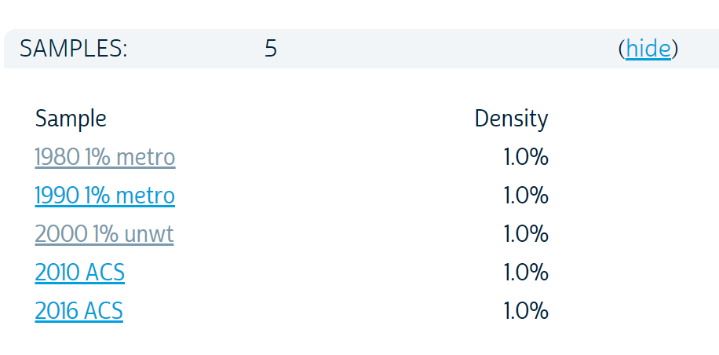
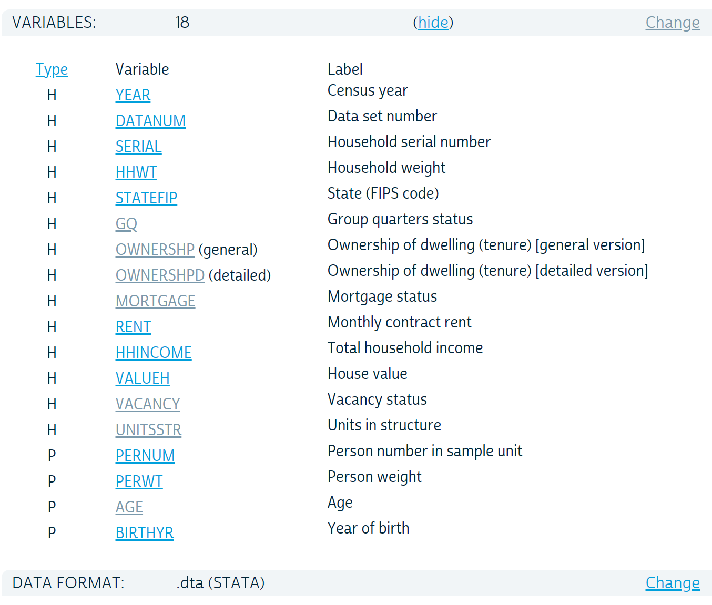
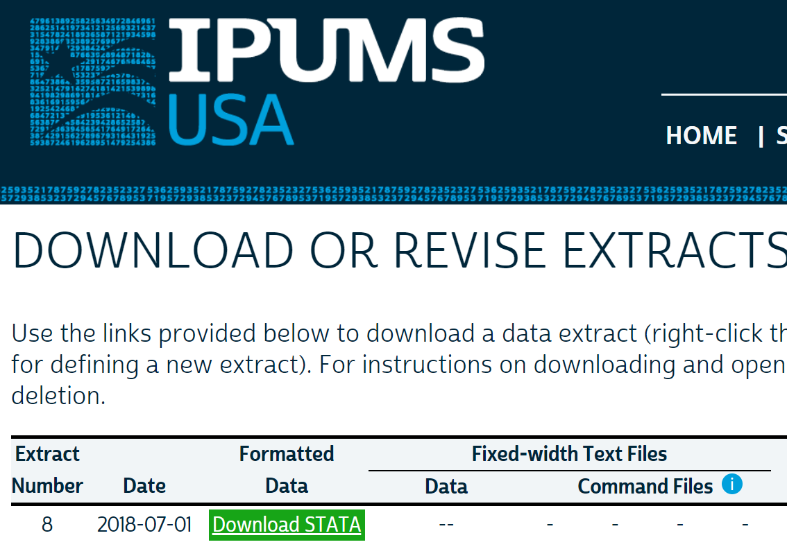
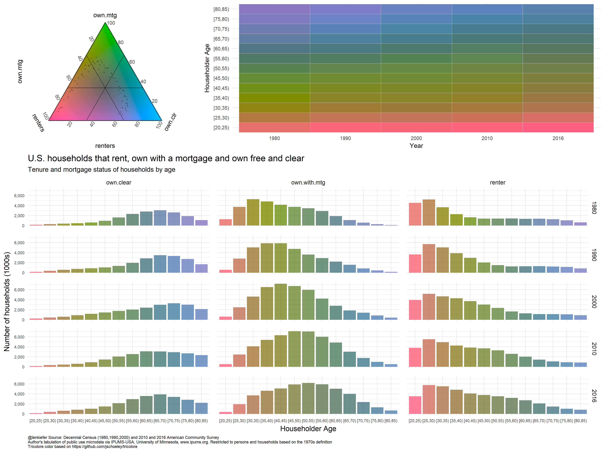

In this post I want to share some observations on housing in the United States from 1980 to 2016, share some R code for data wrangling, and tri (no that’s not a typo, just a pun) out a visualization techniques.
Let’s get to it.
I’ve been carrying a running conversation with folks on Twitter regarding the U.S. housing market and its future. Much of that depends on the evolution of demographic forces. There is a large group of young adults who will drive the U.S. housing market in years to come, but the U.S. also has the aging Baby Boomer generation.
Earlier today I shared this from a presentation by the Federal Reserve Bank of Kansas City’s economist Jordan Rappaport. See here pdf for slides from a recent talk Jordan gave.
What's going to happen as Boomers age? Typically as they age people move out of single family (SF) homes. But longer healthier lives might change the timing.
— 📈 𝙻𝚎𝚗 𝙺𝚒𝚎𝚏𝚎𝚛 📊 (@lenkiefer) July 1, 2018
Chart from "The large unmet demand for #housing" via @KansasCityFed (pdf)https://t.co/8tyVBdaSed pic.twitter.com/UGg8HoMk2i
The slide I shared shows a U shaped pattern in the share of household who live in apartment based on age. I thought it would be interesting to recreate this chart and then see how this relationship has changed over time. I’ve seen Jordan present a version of this in other presentation, though it’s not in the link above.
Get data
IPUMS, you (I)PUMS, we all PUMS for IPUMS
In order to explore these trends, we’re going to need to get some data. As we want custom tabulations, we cannot rely on the ACS package like we did here. Instead we’ll use IPUMS-USA to download data from the U.S. Census Bureau’s Public Use Microdata Samples.
If you want to follow along you’ll need to sign into IPUMS and download your own data. I’ll share the details of the sample I’m using, but the file is too large to post here. I want to see how things may have shifted since 1980, so I’ll collect samples from the 1980, 1990, and 2000 Decennial Census. I’ll also grab the latest available microdata from the 2016 American Community Survey (and 2010 ACS as well). IPUMS has various options you can choose from when selecting your sample, but here are the variables I chose.

IPUMS allows you to select only certain variables for analysis. I chose the following variables along with the defaults that include year, group quarters status (GQ) and household (HHWT) and person (PERWT) weights.
- AGE
- Birth Year
- OWNERSHP
- MORTGAGE
I also collected a few other variables that I won’t use here, but we might use at a later date.

After you selected your variables you can select the format for your data. They don’t have a R option right now, but that’s okay. We can select a Stata data format and use haven to import into R. Note:, you’ll want to selected a Stata formatted data. Select the data format on the data extract request page. See this FAQ.
You could also use a fixed width format, but I find the Stata format easier to work with thanks to haven. We could also use ipumsr, but I haven’t worked with that package yet.

Now that we have our data, we’re ready to rock.
Wrangle
Normally, when I work with large(ish) data like Census microdata, I would use the data.table package. But for today’s analysis, we’ll restrict ourself to the tidyverse. It turns out for most of what we’re doing the gains from data.table in terms of speed of computation are relatively minor, a few seconds at most for most operations we’ll do here.
Thanks to the fabulous work of IPUMS, our data wrangling is pretty limited. The dataset we got from IPUMS is nice and rectangular. There are a few categorical variables with numeric codes (like ownership, mortgage status and structure type).
First, we’ll load our data into R with haven and then we’ll create three useful variables.
# Load libraries ----
library(tidyverse)
library(haven)
library(data.table)
library(scales)
# load data ----
df <- read_dta("data/usa_00008.dta")
# create variables
df <- mutate(df,
own = ifelse(ownershp==1,1,0),
agec = cut(age,seq(0,100,5),right=FALSE),
mtg = case_when(
mortgage == 0 ~ NA_real_, # special NA for integers
# https://stackoverflow.com/questions/44893933/avoiding-type-conflicts-with-dplyrcase-when
mortgage == 1 ~ 0,
TRUE ~ 1 )
)Now, we’ll create two summary datasets. One will be based on households, the other persons. For all analysis we’ll use individuals living outside of group quarters. We’ll use households under the 1970s definition (GQ==1) so we can have consistency from 1980 forward. Though the additional counts you’d get from using the 1990s and 2000s household definitions are relatively minor.
# household level dataframe ----
df.hha <-
df %>%
filter(pernum==1 & gq %in% c(1)) %>%
group_by(year, agec) %>%
summarize(
hh = sum(hhwt),
renters = sum(ifelse(own==0,hhwt,0)),
owners = sum(ifelse(own==1,hhwt,0)),
ho=weighted.mean(own,hhwt,na.rm=T),
mtg= weighted.mean(
case_when(
mortgage == 0 ~ NA_real_,
mortgage == 1 ~ 0,
TRUE ~ 1 ),
hhwt, na.rm=T),
agemin = min(age,na.rm=T),
agem = weighted.mean(age, hhwt,na.rm=T),
agemax = max(age,na.rm=T),
byrmin = min(birthyr, na.rm=T),
byrmax = max(birthyr, nar.rm=T),
mf= weighted.mean(ifelse(unitsstr %in% c(7,8,9,10),1,0),hhwt,na.rm=T),
sf=weighted.mean(ifelse(unitsstr %in% c(3,4),1,0),hhwt,na.rm=T)
) %>%
mutate( own.mtg = mtg*owners,
own.clr = (1-mtg)*owners) %>%
arrange(year, agec)
# person level dataframe ----
# won't use this one today, but could be useful if we wanted to do some person-level tabulations
df.pera <-
df %>%
filter( gq %in% c(1)) %>%
group_by(year, agec) %>%
summarize(
pop = sum(perwt),
renters = sum(ifelse(own==0,perwt,0)),
owners = sum(ifelse(own==1,perwt,0)),
ho=weighted.mean(own,perwt,na.rm=T),
mtg= weighted.mean(
case_when(
mortgage == 0 ~ NA_real_,
mortgage == 1 ~ 0,
TRUE ~ 1 ),
perwt, na.rm=T),
agemin = min(age,na.rm=T),
agem = weighted.mean(age, perwt,na.rm=T),
agemax = max(age,na.rm=T),
byrmin = min(birthyr, na.rm=T),
byrmax = max(birthyr, nar.rm=T),
mf= weighted.mean(ifelse(unitsstr %in% c(7,8,9,10),1,0),perwt,na.rm=T),
sf=weighted.mean(ifelse(unitsstr %in% c(3,4),1,0),perwt,na.rm=T)
) %>%
mutate( own.mtg = mtg*owners,
own.clr = (1-mtg)*owners) %>%
arrange(year, agec)That’s it in terms of data wrangling. Let’s make some plots.
Colors for plots
For most of the plots below, we’ll use a custom scale. We’ll follow this post by Simon Jackson that describes how to create custom color palettes for ggplot2.
# Function for colors ----
#####################################################################################
## Make Color Scale ---- ##
#####################################################################################
my_colors <- c(
"green" = rgb(103,180,75, maxColorValue = 256),
"green2" = rgb(147,198,44, maxColorValue = 256),
"lightblue" = rgb(9, 177,240, maxColorValue = 256),
"lightblue2" = rgb(173,216,230, maxColorValue = 256),
'blue' = "#00aedb",
'red' = "#d11141",
'orange' = "#f37735",
'yellow' = "#ffc425",
'gold' = "#FFD700",
'light grey' = "#cccccc",
'purple' = "#551A8B",
'dark grey' = "#8c8c8c")
my_cols <- function(...) {
cols <- c(...)
if (is.null(cols))
return (my_colors)
my_colors[cols]
}
my_palettes <- list(
`main` = my_cols("blue", "green", "yellow"),
`cool` = my_cols("blue", "green"),
`hot` = my_cols("yellow", "orange", "red"),
`mixed` = my_cols("lightblue", "green", "yellow", "orange", "red"),
`mixed2` = my_cols("lightblue2","lightblue", "green", "green2","yellow","gold", "orange", "red"),
`mixed3` = my_cols("lightblue2","lightblue", "green", "yellow","gold", "orange", "red"),
`mixed4` = my_cols("lightblue2","lightblue", "green", "green2","yellow","gold", "orange", "red","purple"),
`mixed5` = my_cols("lightblue","green", "green2","yellow","gold", "orange", "red","purple","blue"),
`mixed6` = my_cols("green", "gold", "orange", "red","purple","blue"),
`grey` = my_cols("light grey", "dark grey")
)
my_pal <- function(palette = "main", reverse = FALSE, ...) {
pal <- my_palettes[[palette]]
if (reverse) pal <- rev(pal)
colorRampPalette(pal, ...)
}
scale_color_mycol <- function(palette = "main", discrete = TRUE, reverse = FALSE, ...) {
pal <- my_pal(palette = palette, reverse = reverse)
if (discrete) {
discrete_scale("colour", paste0("my_", palette), palette = pal, ...)
} else {
scale_color_gradientn(colours = pal(256), ...)
}
}
scale_fill_mycol <- function(palette = "main", discrete = TRUE, reverse = FALSE, ...) {
pal <- my_pal(palette = palette, reverse = reverse)
if (discrete) {
discrete_scale("fill", paste0("my_", palette), palette = pal, ...)
} else {
scale_fill_gradientn(colours = pal(256), ...)
}
}Housing Trends
Let’s compare trends in homeownership and households from 1980 to 2016 using our data.
mycaption <- "@lenkiefer Source: Decennial Census (1980,1990,2000) and 2010 and 2016 American Community Survey\nAuthor's tabulation of public use microdata via IPUMS-USA, University of Minnesota, www.ipums.org.\nRestricted to persons and households based on the 1970s household definition"
ggplot(summarize(df.hha, ho = weighted.mean(ho,hh)), aes(x=year,y=ho))+
geom_path() +
geom_point(size=3)+
scale_x_continuous(breaks= unique(df.hha$year))+
scale_y_continuous(labels=percent, breaks=seq(0,1,.01), limits=c(.63,.67))+
theme_minimal(base_size=18)+
theme(legend.position="none",
plot.caption=element_text(hjust=0, size=8))+
labs(x="Census Year", y="Homeownership Rate(%)",
title="U.S. Homeownership Rate",
caption=mycaption)
We see that the homeownership rate in the United States is down a little in 2016. How does that compare by age group? Let’s use our 5-year age buckets.
ggplot(data=filter(df.hha,agemax<85,agemax>19), aes(x=year,y=ho, fill=agec))+geom_path() + geom_point()+
scale_x_continuous(breaks= unique(df.hha$year))+
scale_y_continuous(labels=percent, breaks=seq(0,1,.1))+
geom_area(alpha=0.25, position="identity")+
theme_minimal(base_size=14)+
scale_color_mycol("mixed6")+
scale_fill_mycol("mixed6")+
theme(legend.position="none",
axis.text=element_text(size=7),
plot.caption=element_text(hjust=0, size=8),
panel.spacing = unit(1, "lines"))+
facet_wrap(~agec, ncol=5)+
labs(x="Census Year", y="Homeownership Rate(%)",
title="U.S. Homeownership Rate by Householder Age",
caption=mycaption)
Here we see an interesting pattern. The homeownership rate for the younger age groups have declined while they have generally risen for older cohorts. How about mortgage utilization? What’s the percent of homeowner households that have a mortgage?
ggplot(data=filter(df.hha,agemax<85,agemax>19), aes(x=year,y=mtg, fill=agec, color=agec))+
geom_path(color="black") +
geom_point()+
scale_x_continuous(breaks= unique(df.hha$year))+
scale_y_continuous(labels=percent, breaks=seq(0,1,.1))+
geom_area(alpha=0.25, position="identity", color="NA")+
theme_minimal(base_size=14)+
scale_color_mycol("mixed6")+
scale_fill_mycol("mixed6")+
theme(legend.position="none",
axis.text=element_text(size=7),
plot.caption=element_text(hjust=0, size=8),
panel.spacing = unit(1, "lines"))+
facet_wrap(~agec, ncol=5)+
labs(x="Census Year", y="Percent of homeowners with mortgage(%)",
title="U.S. Mortgage utilization by householder age",
subtitle="Percent of homeowner households with a mortgage",
caption=mycaption)
Here we see that over age, the share of households with a mortgage tends to decline, though the share of older households with a mortgage has increased. Let’s combine rentership with two types of owners, those with a mortgage and those who own free and clear in 2016. We’ll need to do a tiny bit of data manipulation.
# roll up by year with group_by and summarize
df.bar <-
df.hha %>%
filter( agem< 85) %>%
group_by(year,agec) %>%
summarize(
renter=sum(renters, na.rm=T),
own.with.mtg = sum(hh*ho*mtg, na.rm=T),
own.clear = sum(hh*ho*(1-mtg), na.rm=T)
) %>%
gather(tenure,hh,-year,-agec)
ggplot(data=filter(df.bar,year==2016), aes(x=agec, y=hh,fill=tenure)) +
geom_col(position="stack", alpha=0.82)+
scale_color_mycol("mixed6")+
scale_fill_mycol("mixed6")+
theme_minimal(base_size=14)+
scale_y_continuous(labels=comma,expand=c(0,0))+
theme(legend.position="top",
axis.text=element_text(size=7),
plot.caption=element_text(hjust=0, size=8),
panel.spacing = unit(1, "lines"))+
labs(x="Householder Age", y="Number of households",
title="U.S. households in 2016",
subtitle="Tenure and mortgage status of households by age",
caption=mycaption)
If we were feeling mischievous we could use a polar coordinate/radial chart. First with the bars (now wedges) summing up to 1 (share of total):
ggplot(data=df.bar, aes(x=agec, y=hh,fill=tenure)) +
geom_col(position="fill", alpha=0.82)+
scale_color_mycol("mixed6")+
scale_fill_mycol("mixed6")+
theme_minimal(base_size=14)+
coord_polar()+
facet_wrap(~year)+
theme(legend.position="top",
axis.text=element_text(size=7),
plot.caption=element_text(hjust=0, size=8),
panel.spacing = unit(1, "lines"))+
labs(x="Householder Age", y="Share of households",
title="U.S. households: renters and owners with and without a mortgage",
subtitle="Tenure and mortgage status of households by age",
caption=mycaption)
Or in absolute counts, wrapping the stacked bar up above around a circle.
ggplot(data=df.bar, aes(x=agec, y=hh,fill=tenure)) +
geom_col(position="stack", alpha=0.82)+
scale_color_mycol("mixed6")+
scale_fill_mycol("mixed6")+
theme_minimal(base_size=14)+
coord_polar()+
facet_wrap(~year)+
theme(legend.position="top",
axis.text=element_text(size=7),
plot.caption=element_text(hjust=0, size=8),
panel.spacing = unit(1, "lines"))+
labs(x="Householder Age", y="Number of households",
title="U.S. households: renters and owners with and without a mortgage",
subtitle="Tenure and mortgage status of households by age",
caption=mycaption)
Okay, enough of that, lest His Airness come back for me.
How about the chart above from Jordan Rappaport’s presentation? Can we trace out the share of households living in apartments over time? Yes indeed.
ggplot(data=filter(df.hha, agemax>19 , agemax<85 ) %>% arrange(year,agemax), aes(x=agec,y=mf,color=factor(year),linetype=factor(year), group=year))+ geom_path(size=1.05)+
scale_color_mycol("mixed6")+
scale_fill_mycol("mixed6")+
theme_minimal(base_size=14)+
geom_text(data=. %>% filter(agemax==84), aes(label=year), hjust=0,nudge_x=0.1,size=4)+
theme(legend.position="none",
axis.text=element_text(size=7),
plot.caption=element_text(hjust=0, size=8),
panel.spacing = unit(1, "lines"))+
scale_y_continuous(labels=percent)+
labs(title="Percent of U.S. households living in multifamily housing \n(structures with 5+ housing units)", x="Householder Age",y="Percent of households",
caption=mycaption)
This chart reveals that the U shaped pattern we saw above is consistent over time. However, the curve has shifted. Interesintly it has shifted up for ages less than 60, but down for those over 60. Could it shift down further in future? It might as Boomers age and live longer healthier lives than earlier generations.
We can unpack the plot and use facets to examine how age groups have evolved over time.
ggplot(data=filter(df.hha,agemax<85,agemax>19), aes(x=year,y=mf, fill=agec, color=agec))+
geom_path(color="black") +
geom_point()+
scale_x_continuous(breaks= unique(df.hha$year))+
scale_y_continuous(labels=percent, breaks=seq(0,1,.1))+
geom_area(alpha=0.25, position="identity", color="NA")+
theme_minimal(base_size=14)+
scale_color_mycol("mixed6")+
scale_fill_mycol("mixed6")+
theme(legend.position="none",
axis.text=element_text(size=7),
plot.caption=element_text(hjust=0, size=8),
panel.spacing = unit(1, "lines"))+
facet_wrap(~agec, ncol=5)+
labs(x="Census Year", y="Percent of Households (%)",
title="Percent of U.S. Households living in multifamily (5+ unit)\nstructures by householder age",
# subtitle="Percent of homeowner households with a mortgage",
caption=mycaption)
Tricolore
This is worth exploring in more detail in a future post, but I just learned about the very interesting Tricolore package. This allows you to make charts with a flexible color scale for the visualization of three-part/ternary compositions. It’s like taking bivariate color scales to a whole new dimension.
We happen to have a nice example, with the three types of households we reviewed above (renters, owners with a mortgage, and owners who own free and clear). If we install the package via devtools::install_github('jschoeley/tricolore, we can run the following and get:
# load extra libraries ----
library(ggtern)
library(tricolore)
library(cowplot)
# Might need to run this to avoid breaking ggtern with cowplot
# see https://github.com/wilkelab/cowplot/issues/88
theme_set(theme_gray())
# create complex plot
hha.test <- filter(df.hha,agemin< 85, agemin>19) %>% mutate(r=(1-ho), m=(1-ho)*mtg, f=(1-ho)*(1-mtg))
#df.tri <- Tricolore(hha.test, "r","m","f")
df.tri <- Tricolore(hha.test, "renters","own.mtg","own.clr")
hha.test$srgb <- df.tri$hexsrgb # merge colors back on data
df.tri <- Tricolore(hha.test, "renters","own.mtg","own.clr")
hha.test$srgb <- df.tri$hexsrgb # merge colors back on data
g.tri <-
df.tri$legend +
theme(plot.background = element_rect(fill = NA, color = NA))#+
# labs(x="",y="")
g.tile <-
ggplot(data=hha.test,
aes(x=agec,
y=factor(year),
fill=srgb))+
geom_tile(color="white")+
labs(x="Householder Age", y="Year")+
scale_fill_identity()+
coord_flip()
# put triangle legend with tile plot
g3 <- plot_grid(g.tri,g.tile,rel_widths=c(1,2))
df.bar3 <- left_join(df.bar, select(hha.test, year,agec,srgb), by=c("year","agec"))
mycaption <- "@lenkiefer Source: Decennial Census (1980,1990,2000) and 2010 and 2016 American Community Survey\nAuthor's tabulation of public use microdata via IPUMS-USA, University of Minnesota, www.ipums.org.\nRestricted to persons and households based on the 1970s definition"
g.bar <-
ggplot(data=filter(df.bar3,!is.na(srgb)), aes(x=agec, y=hh/1000,fill=srgb, group=tenure)) +
geom_col(position="stack", alpha=0.82)+
scale_fill_identity()+
theme_minimal(base_size=14)+
facet_grid(year~tenure)+
scale_y_continuous(labels=comma)+
theme(legend.position="top",
axis.text=element_text(size=8),
plot.caption=element_text(hjust=0, size=8),
panel.spacing = unit(1, "lines"))+
labs(x="Householder Age", y="Number of households (1000s)",
title="U.S. households that rent, own with a mortgage and own free and clear",
subtitle="Tenure and mortgage status of households by age",
caption=paste0(mycaption,"\nTricolore color based on https://github.com/jschoeley/tricolore"))
# create combined plot
cowplot::plot_grid(g3,g.bar, ncol=1, rel_heights=c(1,2))
I like this! But my trial needs refinement. We’ll have to explore this more in future.
Note: Various typos corrected (and legends added back to plots where they were needed!) on July 3, 2018